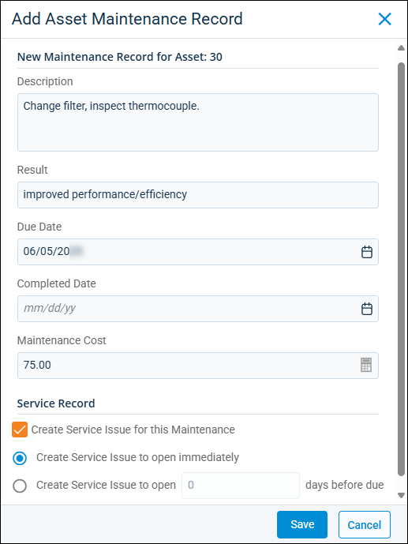

Source: https://rmxhelp.rentmanager.com/Topics/Express/Action/Assets-History-Notes-Maintenance-Add.htm
Add an Asset Maintenance Record to History/Notes
Part of managing assets is performing regular maintenance so that the asset can function properly throughout its expected life. Rent Manager helps you keep maintenance records for your assets so that you know what maintenance tasks were performed, when they happened, and their cost. Asset maintenance records are visible in the asset's history/notes as well as the Scheduled Asset Maintenance and Overdue Asset Maintenance reports.
Related Privileges
| Group | Privilege | Column |
|---|---|---|
| Asset Management | Asset Maintenance Records | Add, View |
For more information, refer to Control User Access.
To add a maintenance record to the asset, do the following:
-
Go to
 arrow_forward Rental Info arrow_forward General arrow_forward Assets and select an asset from the list.
arrow_forward Rental Info arrow_forward General arrow_forward Assets and select an asset from the list.
The asset's details page displays. -
On the action bar to the right, select
 arrow_forward Add Asset Maintenance Record.
arrow_forward Add Asset Maintenance Record.
The Add Asset Maintenance Record pop-up displays.
-
In the New Maintenance Record for Asset section, the following fields are available:
Field Description Completed Date
The date on which the maintenance was completed.
Description
The details of the issue, reason for maintenance, and/or maintenance work performed on the asset to resolve an issue.
Due Date
The date by which the maintenance is scheduled to be completed.
Maintenance Cost
The cost of the maintenance service.
Result
The repair resolution notes or outcomes of maintenance. For example, you may record if repairs were possible and, if not, what the determined course of action is for the asset going forward.
-
In the Service Record section, you can create a service issue associated with this maintenance task. The following options are available:
Field Description Create Service Issue for this Maintenance A service issue associated with this maintenance task is created.
More Information
If a service issue was generated, it can be viewed on the Issues page or by clicking on the maintenance entry in the History/Notes section of the asset.
Create Service Issue to open immediately The Opened issue date set to today's date.
Create Service Issue to open X days before due
The Opened issue date set for the number of days entered before the Due Date.
-
Click Save.
The maintenance record can now be viewed on the asset's History/Notes tile.